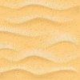

Yes, I'm obviously a Baby Yoda lover :)
The goal of this project is to create a game called "so_long" using the C programming language and the Minilibx and Libft libraries. The game will be played on a 2D map consisting of walls, floor tiles, a player character, collectible objects, and an exit tile.
The map is read from a file and validated for correctness using a
series of functions. Once the map is validated, it is displayed to
the player using the Minilibx library, and the player can move
their character using the arrow keys on their keyboard.
The game ends when the player successfully collects all the
objects and reaches the exit tile, and the total number of steps
taken by the player is displayed on the screen. The game also
features a "collectible counter" that displays the number of
objects the player has collected so far.
To achieve this logic, I used various functions to check and to update the player's position and collectible count and steps count when the player moves. I also used flood fill algorithm to check if there is a path between the player and the exit (backtracking). The player must navigate the map to collect all the objects and reach the exit tile while trying to use the least possible number of steps.
From coding this project, I improved a number of valuable skills
and gained experience in several areas, including:
Programming logic: I had to come up with an algorithm to
move the player character through the game board. This required
logical thinking and problem-solving skills.
Memory management:
I had to allocate and free memory for various data structures, in
order to avoid memory leaks. I used calloc in order to do this
because calloc allocates memory and sets it to zero. That's why
for this case was better option than malloc. Because malloc
doesn't set the memory to zero, so if you use malloc and then you
use the memory without setting it to zero, you might get some
unexpected results.
Input/output:
I had to read in the game map from a file and display it on the
screen, as well as accept user input to move the player. I used
the get_next_line function to read the map file. And regarding the
moves I used the key_press function to move the player.
Graphics programming:
I used the Minilibx library to create the game window and display
images of the player, walls, collectibles, and exit. Regarding the
graphics I had to convert the files I created in photoshop into
.xpm type files.
for the 0s in the map file. The space where the player can
move.

for the 1s in the map file. The wall where the player can't go.
for the E in the map file. The exit where the player has to go.
for the C in the map file. The collectible that the player has to
collect.
and finally for the P in the map file. The player.
Error handling: I had to anticipate and handle errors that
might arise during the game, such as invalid map files or memory
allocation failures.
Makefile and project organization: I had to create a
Makefile to compile my project and organize my code into separate
files for readability and maintainability.
Working on the "So_long" project helped me improve my coding skills and allowed me to showcase my creativity. This project required me to think critically and creatively to develop a visually game. I had to carefully consider the game mechanics and user interface to create a seamless and enjoyable experience for the player.